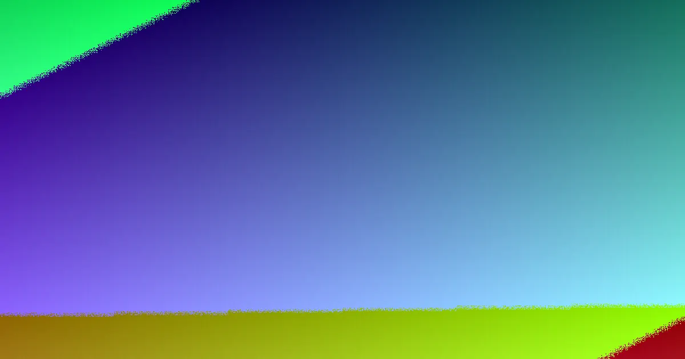

Concrete sleeper walls in Brisbane range from about $300 per square metre for a simple, accessible low wall to $1,000+ for taller, engineered or difficult-access work. A wall no more than 1 m high, with no surcharge load and at least 1.5 m from a building or another retaining wall, generally needs no building approval. Taller or more complex walls usually need approval and an RPEQ design or certification. Final cost depends on height, access, excavation, drainage, engineering and approvals.
For homeowners comparing concrete sleeper retaining walls brisbane options, the practical decision is how the wall will hold soil, manage water, satisfy approval requirements and fit the site's access constraints.
Concrete Sleeper Retaining Walls Brisbane Explained
Brisbane Sleeper Wall Installers describes concrete sleepers as steel-reinforced panels stacked between galvanised steel posts. They are commonly considered for garden beds, terraces, levelled lawns and replacement of old timber sleeper walls. Concrete does not rot and is not eaten by termites, while manufacturers often quote a design life of around 50 years.
Measure the rough wall length and height, then record anything that affects access. A steep slope, narrow side path, nearby structure or another retaining wall can change excavation, post-hole work, drainage and the design required. The wall is structural work, so the soil it retains matters as much as the visible face.
- Note whether a building, boundary, driveway or another wall sits close behind or beside the proposed wall.
- Identify whether soil behind the wall will carry an additional load, known as surcharge loading.
- Record access for excavation equipment, materials and removal of spoil.
Approval questions to settle before digging
A low garden wall that, together with the soil it holds back, is no more than 1 m high, carries no surcharge load and sits at least 1.5 m from a building or another retaining wall generally needs no building approval. Those conditions should be checked against the actual site rather than assumed from the wall's visible height.
Outside those limits, the work generally needs building approval and a site-specific design. The published guidance identifies a Registered Professional Engineer of Queensland, or an engineer working under direct supervision, for the relevant design or certification. It also notes that Queensland licensing rules apply once a job is valued over $3,300. Ask who is responsible for the design, certification, approval paperwork and construction before accepting a quote.
A fence changes the calculation. In Brisbane, the fence and retaining wall heights count together, and a combined height over 2 m above natural ground needs building approval. Put the proposed fence height and natural ground level into the early discussion.
Drainage, posts and backfill belong in the quote
Water management should be visible in an itemised proposal. A typical build may use slotted ag pipe at the base, free-draining gravel backfill and geotextile fabric, with water directed to a lawful point of discharge rather than onto neighbouring land. Ask where the discharge point is and whether stormwater or easements affect the layout.
Common sleepers are 2.0 m or 2.4 m long, 200 mm high and about 75 to 80 mm thick. They are steel-reinforced and often rated at 40 MPa or more. The manufacturer's design tables or an engineer determine post size and hole depth, so a quote should identify the proposed sleeper and post system rather than describe the materials only as concrete and steel.
Before post holes or drainage trenches are dug, a Before You Dig Australia enquiry can identify underground electricity, gas, water and telecommunications assets. Post holes are commonly dug roughly as deep as the wall is high, but the final depth comes from the manufacturer's tables or an engineer.
How price differences show up
Published Brisbane price guides put installed concrete sleeper walls from around $300 per square metre of wall face for a simple, accessible low wall, rising to $1,000+ per square metre for taller, engineered or hard-to-access work. These are indicative figures, not a substitute for a site-specific quote.
Compare the assumptions behind each price. Height, length, excavation, spoil removal, access, drainage, engineering and approvals can all change the total. A lower initial figure may exclude one of those items. Request an itemised quote that states:
- the wall dimensions, sleeper type and post system;
- excavation, post holes, backfill and spoil removal;
- drainage materials and the lawful discharge point;
- engineering, certification, approval work and any fence component.
Concrete sleepers generally cost more upfront than treated pine, but the material's resistance to rot and termites is part of the replacement decision. Compare the stated scope and expected service life, not just the first square-metre figure.
Who this guide applies to and what to ask
This guide is for Brisbane homeowners planning a garden wall, terraced lawn, sloping-block improvement, replacement timber wall or a taller engineered structure. It is also relevant when a Colorbond fence is planned above the wall, or when access and drainage may be difficult.
- What is the combined height of the retained soil, wall and proposed fence?
- Is there a building, another wall or surcharge load within the relevant area?
- Does the site require an RPEQ design, certification or building approval?
- How will water leave the wall without discharging onto neighbouring land?
- What exactly is included in excavation, drainage, engineering and approvals?
The business named above says an enquiry can include the suburb, rough wall length and height, and access details, with an installer discussing the job and arranging a quote. Treat that conversation as an opportunity to verify site facts, responsibilities and inclusions before deciding.
For a broader comparison of local installation questions, see the Brisbane retaining wall installer guide.
- Describe the site. Share the rough length and height, slope, access limits, nearby structures and any planned fence.
- Check the design path. Ask whether the wall fits the low-wall conditions or needs approval and RPEQ design or certification.
- Review the drainage plan. Confirm ag pipe, gravel backfill, geotextile fabric and a lawful point of discharge.
- Compare itemised quotes. Check dimensions, materials, excavation, spoil, engineering, approvals and fence work before deciding.
| Situation | Likely planning path | Quote focus |
|---|---|---|
| Low garden or lawn wall | Check the 1 m height, surcharge and 1.5 m separation conditions | Access, excavation, drainage and sleeper system |
| Taller or engineered wall | Building approval and site-specific design are usually required | RPEQ responsibility, engineering, approvals and drainage |
| Wall with fence above | Combined wall and fence height must be considered | Natural ground level, fence scope and approval trigger |
Common questions
What does a concrete sleeper retaining wall cost in Brisbane? Published Brisbane guides put installed work at around $300 per square metre for a simple accessible low wall, rising to $1,000+ for taller, engineered or hard-to-access work. The final figure depends on scope and site conditions.
When does a retaining wall need building approval? A wall no more than 1 m high, with no surcharge load and at least 1.5 m from a building or another retaining wall, generally needs no building approval. Walls outside those limits usually need approval and a site-specific design.
Does a fence count toward retaining wall height? Yes. In Brisbane, the fence and retaining wall heights count together. A combined height over 2 m above natural ground needs building approval.
What should drainage include? A typical system uses slotted ag pipe, free-draining gravel backfill and geotextile fabric, with water sent to a lawful point of discharge. The quote should state how the proposed site will handle water.
This guide covers Brisbane concrete sleeper wall planning, approval questions, drainage, materials, pricing and quote checks.